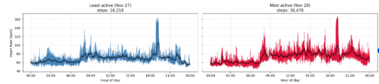

What was in the export
Heart rate and raw beat-to-beat intervals, thousands to hundreds of thousands of rows.
Daily and hourly logs with Garmin's own HRV and stress values.
Mostly expected (on-demand ECG, devices not worn), but four mattered.
The four empty files that shaped the analysis
- Surveys were empty: no self-reported mood or stress, so no ground truth for affect.
- Enhanced beat intervals were empty while the raw file had 721k rows, so the raw stream had to be cleaned by hand.
- The RMSSD file was empty, yet RMSSD appeared inside the health logs, which is misleading naming.
- Raw accelerometer, gyroscope and ECG were empty, so there was no electrical gold standard to cross-check HRV.
Cleaning decisions
Two overlapping heart-rate streams
Nested sleep sessions
Resting heart rate that resists glitches
Busy day vs quiet day

Compare the two days:
Even the quiet day was well above 10,000 steps.
The busy day ran hotter and spent more than twice as much time above 100 bpm, but its overnight floor (about 50–60 bpm) was the same. Activity raised the daytime ceiling, not the resting baseline.
Main finding
For affect inference, wearable signals need to be paired with in-the-moment self-reports, such as short experience-sampling prompts. That is also why diary methods matter in my scrolling study.
Limits
Three days from one participant, with no ECG to cross-check HRV. These are observations, not general claims.